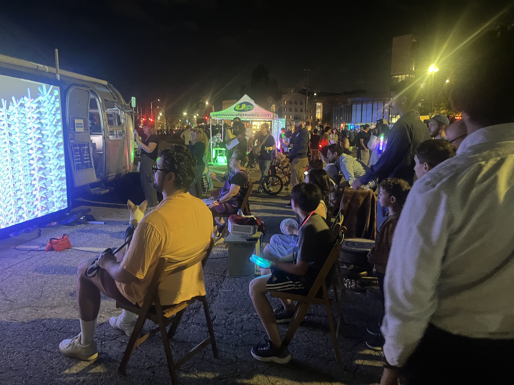
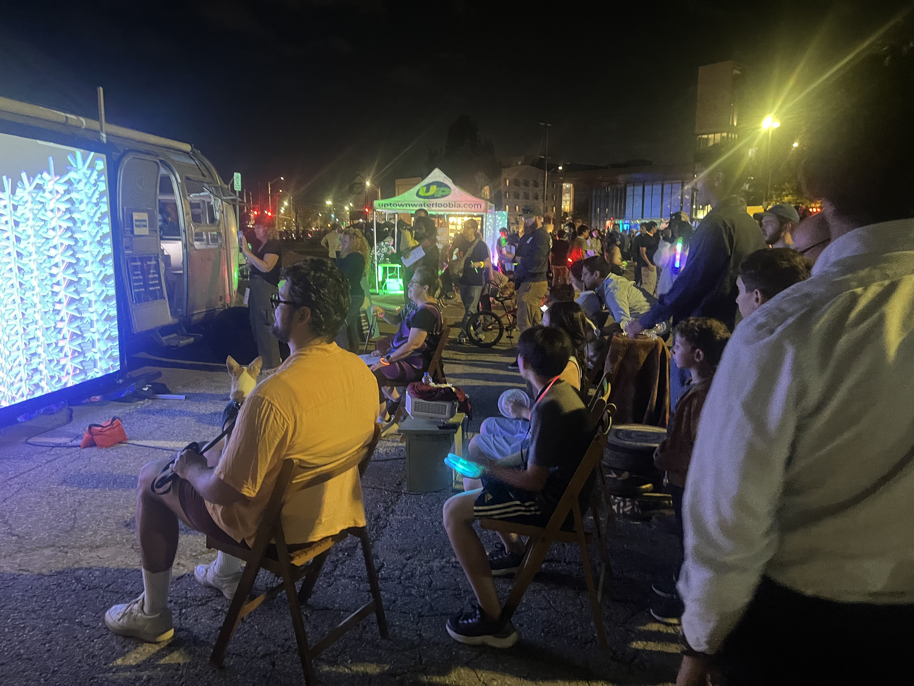

“No Place like Home” is an art installation which invites participants to use a flashlight to explore a model of a home made out of dark bristol board. As they explore rooms, a similarly constructed ‘television’ displays dreamlike portraits of these rooms. These portraits are composed of a mix of real photos of my childhood home, AI generated images from prompts of memories I have, materials from advertisements of furniture in the home, and digitally drawn textures. All of these are imposed onto 3D models of whatever item or memory they are most meant to represent.
The mix of the familiar and the unfamiliar - real photos and AI generated ones; a childlike dollhouse and a generated component for each room - is meant to invoke a feeling of the uncanny. For me personally, this piece was made as my parents are moving out of my childhood home in the city and into the county. I wanted to explore the feeling of looking back on childhood memories in a space you are an outsider to. The title “No Place like Home” is a nod to this mix of feelings.
 

The car wash is a cleansing ritual that also concerns itself with the beauty of the cleansing experience. It’s a somewhat uniform experience across the continent. These factors make it a great starting point for imagining what a secular baptism ritual might be.
The audience is invited to be cleaned in the ‘people wash’. Three screens of graphics (brush, suds, and bubbles) “wash” the participant, before sending them off with a blessing.
"Menstrual Gallery of Art" is a set of scripts that changes my desktop background daily based on where I am in my menstrual cycle. The script pulls from the Art Institute of Chicago's collection and picks art that thematically aligns with various stages of my menstrual cycle.
It helps me discover new art and also serves the practical function of a menstrual cycle tracker. There's also just something funny and truthful about your laptop background being automatically set to "Clown Torture" as your premenstrual symptoms set in.
Short film I directed for the UW Film "night light" contest.